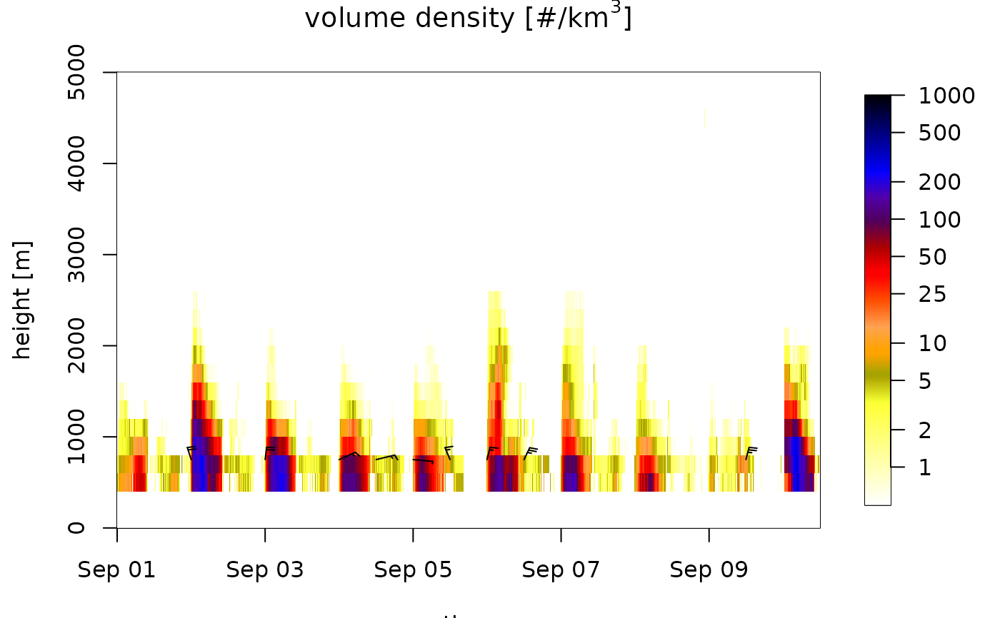
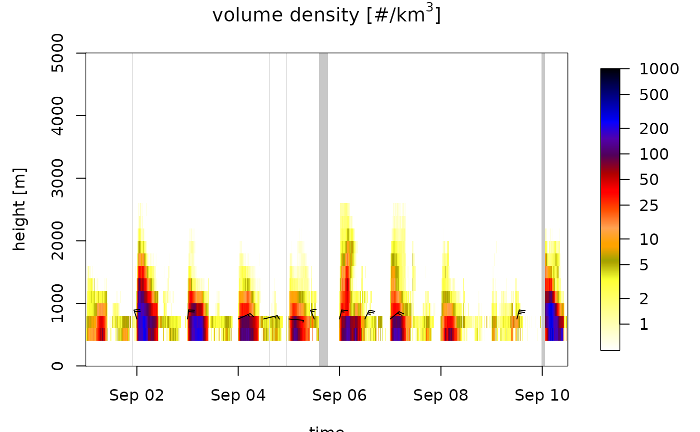
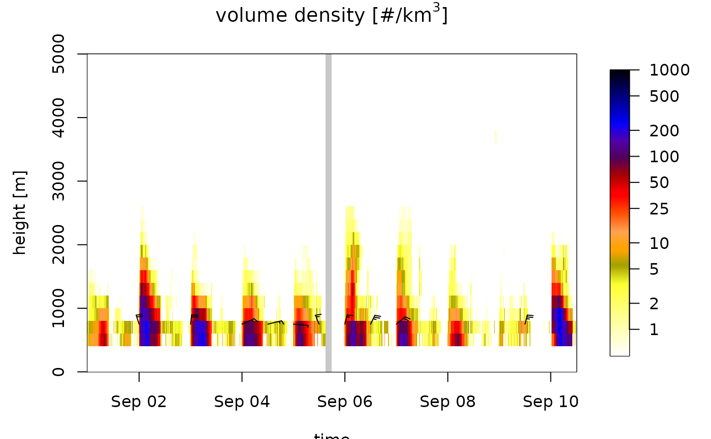

Regularize a time series of vertical profiles (vpts) on a regular time grid
Source: R/regularize_vpts.R
regularize_vpts.RdProjects objects of class vpts on a regular time grid
Usage
regularize_vpts(
ts,
interval = "auto",
date_min,
date_max,
units = "secs",
fill = TRUE,
verbose = TRUE,
keep_datetime = FALSE
)Arguments
- ts
An object inheriting from class
vpts, seevpts()for details.- interval
Time interval grid to project on. When '
auto' the median interval in the time series is used.- date_min
Start time of the projected time series, as a POSIXct object. Taken from
tsby default'.- date_max
End time of the projected time series, as a POSIXct object. Taken from
tsby default.- units
Optional units of
intervalandfill, one of 'secs', 'mins', 'hours','days', 'weeks'. Defaults to 'mins'.- fill
Numeric or Logical. fill each regularized timestep with the closest original profile found within a time window of +/-
fill. WhenTRUE,fillmaps tointerval, filling single missing timesteps. WhenFALSE,fillmaps to 0, disabling filling.- verbose
Logical, when
TRUEprints text to console.- keep_datetime
Logical, when
TRUEkeep original radar acquisition timestamps.
Details
Projects objects of class vpts on a regular time grid, and fills
temporal gaps by nearest neighbor interpolation.
Irregular time series of profiles are typically aligned on a
regular time grid with the expected time interval at which a radar provides
data. Alignment is performed using a nearest neighbor interpolation limited to
neighboring profiles that fall within +/- fill (centered) of an original profile.
Remaining temporal gaps in the time series are filled with empty profiles that have values NA for all quantities, such that each timestamp of the regular grid has an associated profile.
In plots of regular time series (see plot.vpts()) temporal gaps of
missing profiles (e.g. due to radar down time) become visible, as a result
of the gap filling with empty profiles. In irregular
time series data points in the plot are carried through until the time series
continues, and temporal data gaps are filled up visually.
When keep_datetime is TRUE the original profile timestamps are kept in
ts$datetime. This may lead to duplicate timestamps when regularizing on a timegrid
finer than the interval of available profiles.
Examples
# start form example vpts object:
data(example_vpts)
ts <- example_vpts
# data gaps are not visible:
plot(ts)
#> Warning: Irregular time-series: missing profiles will not be visible. Use 'regularize_vpts' to make time series regular.

# regularize the time series on a 5 minute interval grid
tsRegular <- regularize_vpts(ts, interval = 300)
# data gaps are visible:
plot(tsRegular)

# regularize the time series on a 10 minute interval grid,
# and fill data gaps smaller than 1 hour by nearest neighbor interpolation
tsRegular <- regularize_vpts(ts, interval = 600, fill = 3600)
# data gaps are smaller as a result of nearest neighbor interpolation:
plot(tsRegular)
